Exploratory Results - Exploratory
by: Nina Sneijers
1 Exploratory Results
1.1 Model 0: Simple Model
The null model converges at 0.13, which is acceptable. The outcomes of the simple model (Table 1) show things we have already learned from the descriptive results and the network graph, namely that there is a significantly bigger chance that one does not observe a tie, compared to the chance that one would observe a tie, thus meaning that density is very low (b = -2.67, SE = 0.53, p >.01). The reciprocity statistic is positive, indicating that the students in the network do tend to reciprocate their tie (b = 2.09, SE = 0.14, p >.01)
Change in social satisfaction is not significant on a linear level (b = 0.17, SE = 0.14, p = 0.22), but it is significant on a quadratic level (b = -0.34, SE = 0.15, p = 0.02) and going into a negative direction, which indicates that students whose social satisfaction is below the mean have a stronger tendency to move towards to mean than students who are above the mean.
However, these statistics on their own do not mean a lot yet, as the statistics as defined in the methodology need to be added to the models and some additional control statistics.
Table 1: Results of Model 0
pander::pander(results_m0)| effect | b | se | t | p |
|---|---|---|---|---|
| basic rate parameter netMLC | 6.878 | 0.5339 | 12.88 | 5.645e-38 |
| outdegree (density) | -2.666 | 0.07295 | -36.55 | 1.864e-292 |
| reciprocity | 2.096 | 0.1472 | 14.24 | 5.535e-46 |
| rate behMLC period 1 | 1.793 | 0.3801 | 4.718 | 0.000002385 |
| behMLC linear shape | 0.1742 | 0.1423 | 1.224 | 0.2208 |
| behMLC quadratic shape | -0.3374 | 0.1457 | -2.316 | 0.02055 |
1.2 Model 1: Homogeneity in Reciprocated Ties
The first model converges at 0.12, which is lower than the 0.25 threshold and all convergence t-ratios are smaller than 0.1, with the maximum convergence t-ratio of -0.09.
Table 2: Results of Model 1
pander::pander(results_m1)| effect | b | se | t | p |
|---|---|---|---|---|
| basic rate parameter netMLC | 11.09 | 1.267 | 8.755 | 2.035e-18 |
| outdegree (density) | -1.67 | 0.2586 | -6.458 | 0.0000000001063 |
| reciprocity | 1.896 | 0.2522 | 7.517 | 5.584e-14 |
| GWESP I -> K -> J (69) | 1.382 | 0.1545 | 8.941 | 3.858e-19 |
| indegree - popularity | -0.07991 | 0.03207 | -2.492 | 0.0127 |
| outdegree - activity | -0.07343 | 0.02427 | -3.026 | 0.00248 |
| out-isolate | 3.281 | 0.5518 | 5.946 | 0.000000002741 |
| parent_edu_ccv alter | 0.1714 | 0.1594 | 1.075 | 0.2824 |
| parent_edu_ccv ego | -0.1784 | 0.1446 | -1.234 | 0.2174 |
| same parent_edu_ccv | -0.004642 | 0.15 | -0.03094 | 0.9753 |
| same parent_edu_ccv x reciprocity | -0.3414 | 0.3079 | -1.109 | 0.2675 |
| rate behMLC period 1 | 1.781 | 0.3933 | 4.528 | 0.000005965 |
| behMLC linear shape | 0.1756 | 0.1431 | 1.227 | 0.2197 |
| behMLC quadratic shape | -0.3466 | 0.1634 | -2.121 | 0.03393 |
1.3 Model 2:
Goodness of fit en RI voor model 2 omdat dit met control variables is
Table 2: Results of Model 1
pander::pander(results_m2)| effect | b | se | t | p |
|---|---|---|---|---|
| basic rate parameter netMLC | 11.12 | 1.378 | 8.073 | 6.878e-16 |
| outdegree (density) | -1.735 | 0.2797 | -6.205 | 0.0000000005476 |
| reciprocity | 1.91 | 0.2901 | 6.584 | 4.574e-11 |
| GWESP I -> K -> J (69) | 1.375 | 0.162 | 8.489 | 2.083e-17 |
| indegree - popularity | -0.08469 | 0.0358 | -2.366 | 0.018 |
| outdegree - activity | -0.07126 | 0.02413 | -2.953 | 0.00315 |
| out-isolate | 3.272 | 0.502 | 6.518 | 7.105e-11 |
| parent_edu_ccv alter | 0.1586 | 0.1605 | 0.9881 | 0.3231 |
| parent_edu_ccv ego | -0.1802 | 0.1563 | -1.153 | 0.2491 |
| same parent_edu_ccv | -0.01257 | 0.1695 | -0.07416 | 0.9409 |
| same parent_edu_ccv x reciprocity | -0.3109 | 0.3518 | -0.8836 | 0.3769 |
| ethnicity_ccv alter | 0.00003757 | 0.0403 | 0.0009324 | 0.9993 |
| ethnicity_ccv ego | 0.03682 | 0.03705 | 0.9938 | 0.3203 |
| same ethnicity_ccv | 0.2061 | 0.1347 | 1.53 | 0.126 |
| same ethnicity_ccv x reciprocity | -0.06905 | 0.3146 | -0.2195 | 0.8263 |
| rate behMLC period 1 | 1.776 | 0.3732 | 4.757 | 0.00000196 |
| behMLC linear shape | 0.1815 | 0.1496 | 1.213 | 0.2252 |
| behMLC quadratic shape | -0.3425 | 0.1429 | -2.396 | 0.01658 |
1.3.1 Figure 2: Goodness Of Fit for Model 2
1.3.1.1 Indegree distribution
plot(gofi2)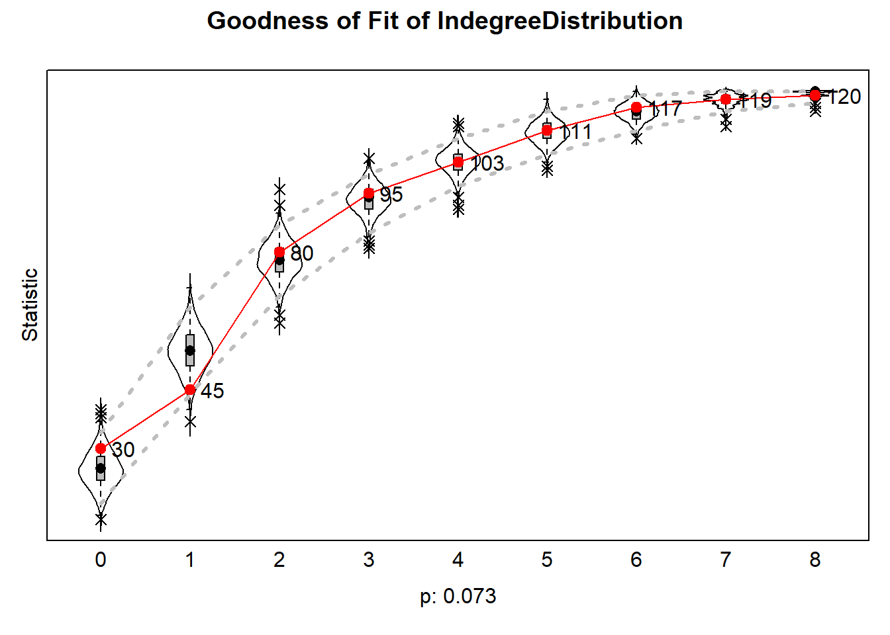
1.3.1.2 Outdegree distribution
plot(gofo2)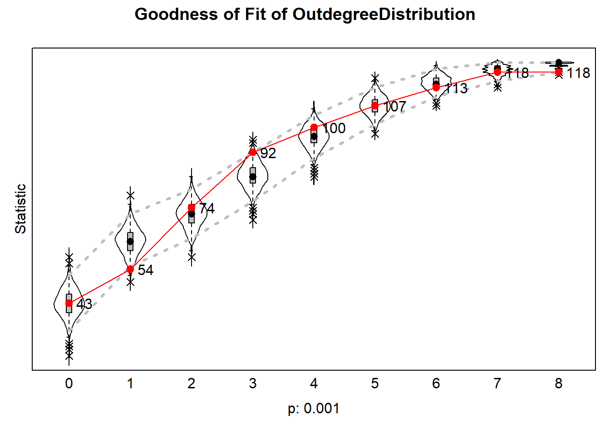
1.3.1.3 TriadCensus
plot(gof2tc, center = T, scale = T)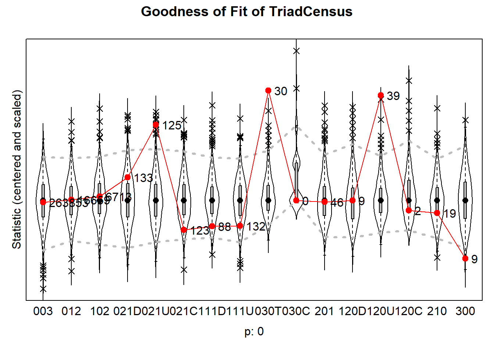
1.3.2 Figure 3: Relative Influence
1.3.2.1 Relative influence on network
plot(RI2[[1]], addPieChart = TRUE, legendColumns = 3)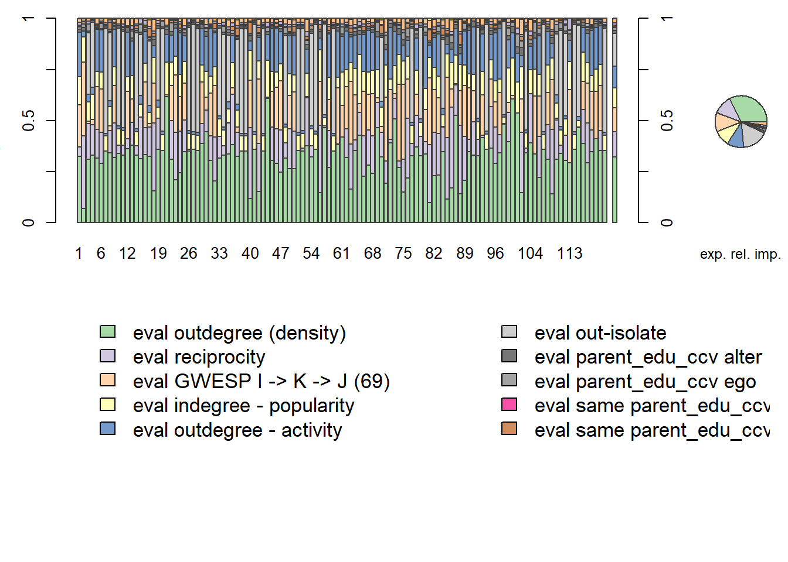
1.3.2.2 Relative influence on behaviour
plot(RI2[[2]], addPieChart = TRUE, legendColumns = 3)1.5 Model 4: Homogeneity in Reciprocated Ties ties with control variables
Table 5: Results of Model 4
pander::pander(results_m4)| effect | b | se | t | p |
|---|---|---|---|---|
| basic rate parameter netMLC | 11.14 | 1.269 | 8.78 | 1.642e-18 |
| outdegree (density) | -1.755 | 0.2281 | -7.693 | 1.438e-14 |
| reciprocity | 1.912 | 0.2919 | 6.551 | 5.729e-11 |
| GWESP I -> K -> J (69) | 1.369 | 0.1566 | 8.742 | 2.282e-18 |
| indegree - popularity | -0.08206 | 0.0392 | -2.093 | 0.03634 |
| outdegree - activity | -0.07041 | 0.02171 | -3.244 | 0.00118 |
| out-isolate | 3.259 | 0.4891 | 6.663 | 2.677e-11 |
| parent_edu_ccv alter | 0.1605 | 0.1635 | 0.9818 | 0.3262 |
| parent_edu_ccv ego | -0.1756 | 0.1496 | -1.174 | 0.2405 |
| same parent_edu_ccv | -0.000734 | 0.1594 | -0.004605 | 0.9963 |
| same parent_edu_ccv x reciprocity | -0.3336 | 0.34 | -0.9814 | 0.3264 |
| ethnicity_ccv alter | 0.003233 | 0.04867 | 0.06643 | 0.947 |
| ethnicity_ccv ego | 0.03474 | 0.03705 | 0.9376 | 0.3484 |
| same ethnicity_ccv | 0.2103 | 0.1323 | 1.59 | 0.1119 |
| same ethnicity_ccv x reciprocity | -0.0735 | 0.3186 | -0.2307 | 0.8175 |
| rate behMLC period 1 | 1.724 | 0.3629 | 4.749 | 0.000002042 |
| behMLC linear shape | 0.05039 | 0.259 | 0.1946 | 0.8457 |
| behMLC quadratic shape | -0.4742 | 0.2499 | -1.897 | 0.05777 |
| behMLC average rec. alters | 0.8161 | 1.129 | 0.7226 | 0.4699 |
| behMLC reciprocated degree | -0.2664 | 0.2559 | -1.041 | 0.2978 |
| behMLC: rec. alt’s (netMLC) same parent_edu_ccv av. | 1.367 | 1.408 | 0.9709 | 0.3316 |
| behMLC: average rec. alter (netMLC) for same parent_edu_ccv | -0.01717 | 1.319 | -0.01301 | 0.9896 |
1.5.1 Figure 6: Goodness Of Fit for Model 4
1.5.1.1 Behaviour distribution
plot(gofb4)## Note: some statistics are not plotted because their variance is 0.
## This holds for the statistic: 7.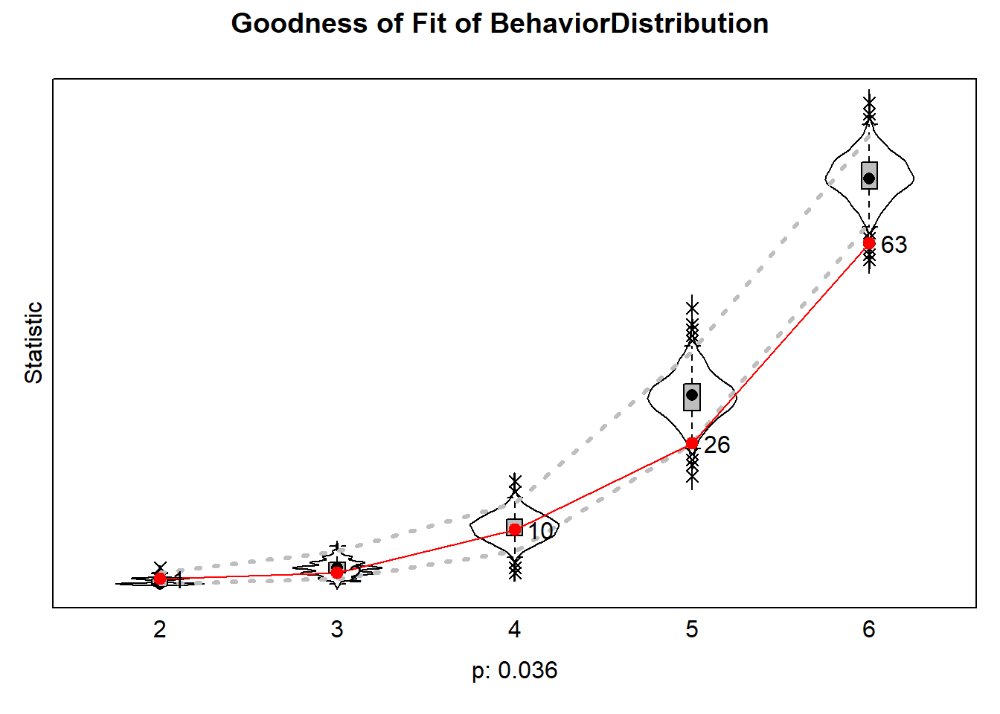
1.5.2 Figure 7: Relative Influence
1.5.2.1 Relative influence on behaviour
plot(RI4[[2]], addPieChart = TRUE, legendColumns = 1)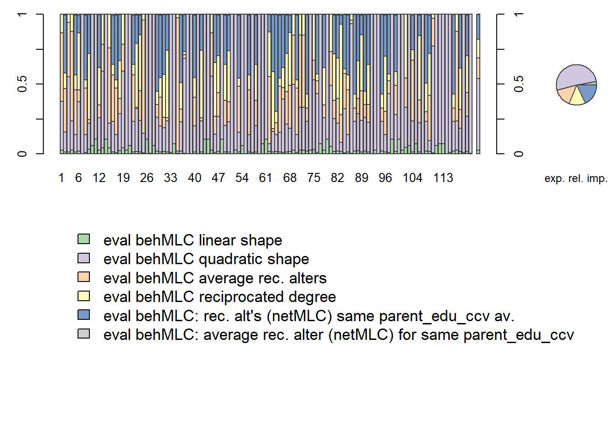
2 RCode
2.1 Model 0: Simple Model
simple_model <- siena07(myAlgorithm, data = mydata, effects = myeff, thetaBound = 10000, returnDeps = T)
#saveRDS(simple_model, "simple_model.rds")2.2 Model 1: Homogeneity in reciprocated ties
myeff <- includeEffects(myeff, egoX, altX, sameX, sameXRecip, interaction1 = "parent_edu_ccv") ## effectNumber effectName shortName include fix test
## 1 265 parent_edu_ccv alter altX TRUE FALSE FALSE
## 2 280 parent_edu_ccv ego egoX TRUE FALSE FALSE
## 3 336 same parent_edu_ccv sameX TRUE FALSE FALSE
## 4 342 same parent_edu_ccv x reciprocity sameXRecip TRUE FALSE FALSE
## initialValue parm
## 1 0 0
## 2 0 0
## 3 0 0
## 4 0 0model1.1 <- siena07(myAlgorithm, data = mydata, effects = myeff, thetaBound = 10000, returnDeps = T)
#saveRDS(model1.1, "model1.1.rds")model1.1 <- readRDS("model1.1.rds")
gofi1.1 <- sienaGOF(model1.1, IndegreeDistribution, verbose = FALSE, join = TRUE, varName = "netMLC")
gofo1.1 <- sienaGOF(model1.1, OutdegreeDistribution, verbose = FALSE, join = TRUE, varName = "netMLC")
#gof0.gd <- sienaGOF(model1.1, GeodesicDistribution, cumulative = FALSE, verbose = FALSE, join = TRUE, varName = "netMLC")
# Doet het niet
gof1.1.tc <- sienaGOF(model1.1, TriadCensus, verbose = FALSE, join = TRUE, varName = "netMLC")plot(gofi1.1)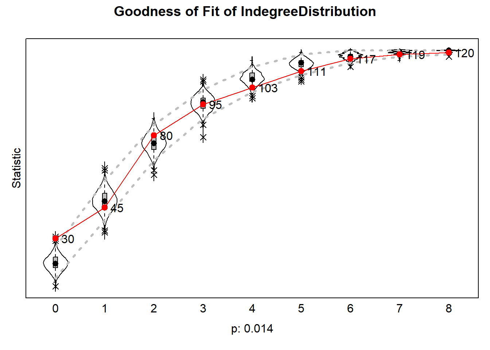
plot(gofo1.1)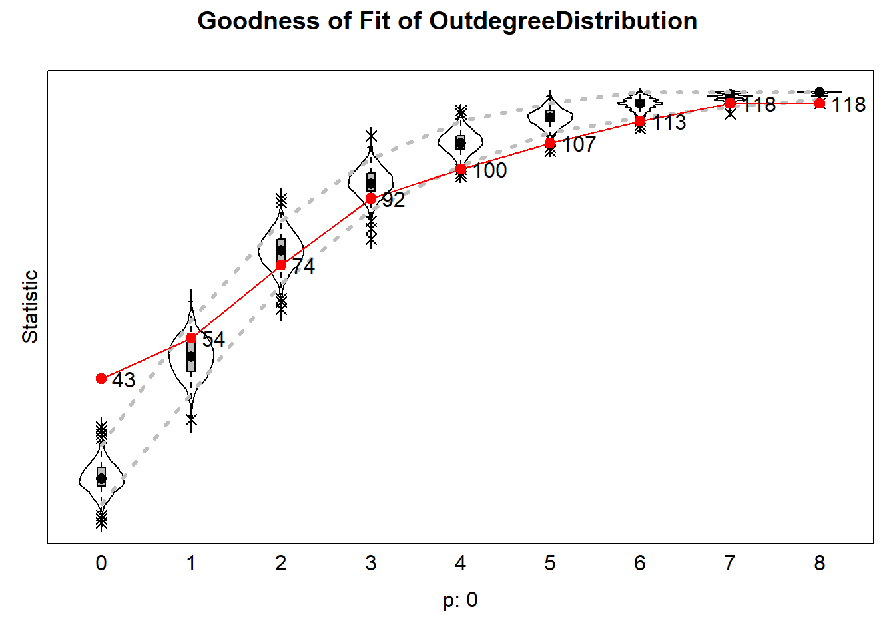
plot(gof1.1.tc, center = T, scale = T)
WELL, that does not very good. But that’s not weird, because I have not added any additional effects. Let’s add a triad effect :)
myeff <- includeEffects(myeff, gwespFF) ## effectNumber effectName shortName include fix test initialValue
## 1 57 GWESP I -> K -> J (#) gwespFF TRUE FALSE FALSE 0
## parm
## 1 69model1.2 <- siena07(myAlgorithm, data = mydata, effects = myeff, thetaBound = 10000, returnDeps = T)
#saveRDS(model1.2, "model1.2.rds")model1.2 <- readRDS("model1.2.rds")
gofi1.2 <- sienaGOF(model1.2, IndegreeDistribution, verbose = FALSE, join = TRUE, varName = "netMLC")
gofo1.2 <- sienaGOF(model1.2, OutdegreeDistribution, verbose = FALSE, join = TRUE, varName = "netMLC")
gof1.2.tc <- sienaGOF(model1.1, TriadCensus, verbose = FALSE, join = TRUE, varName = "netMLC")plot(gofi1.2)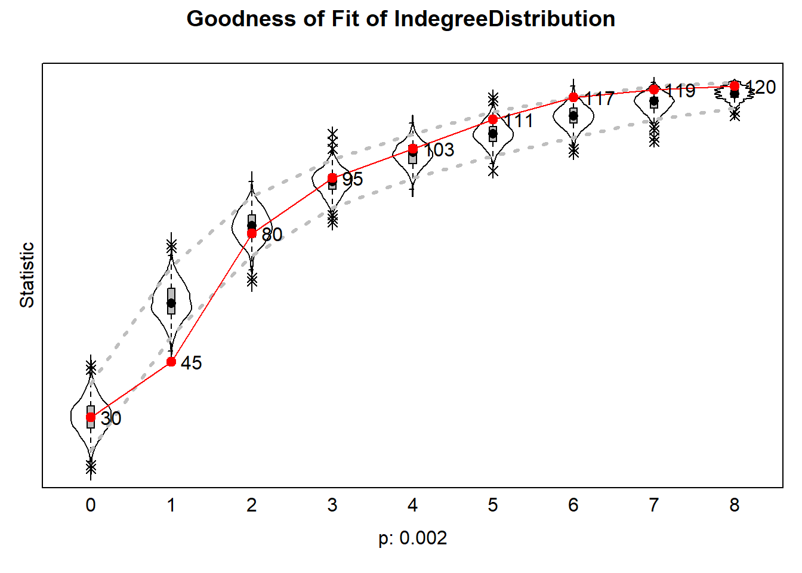
plot(gofo1.2)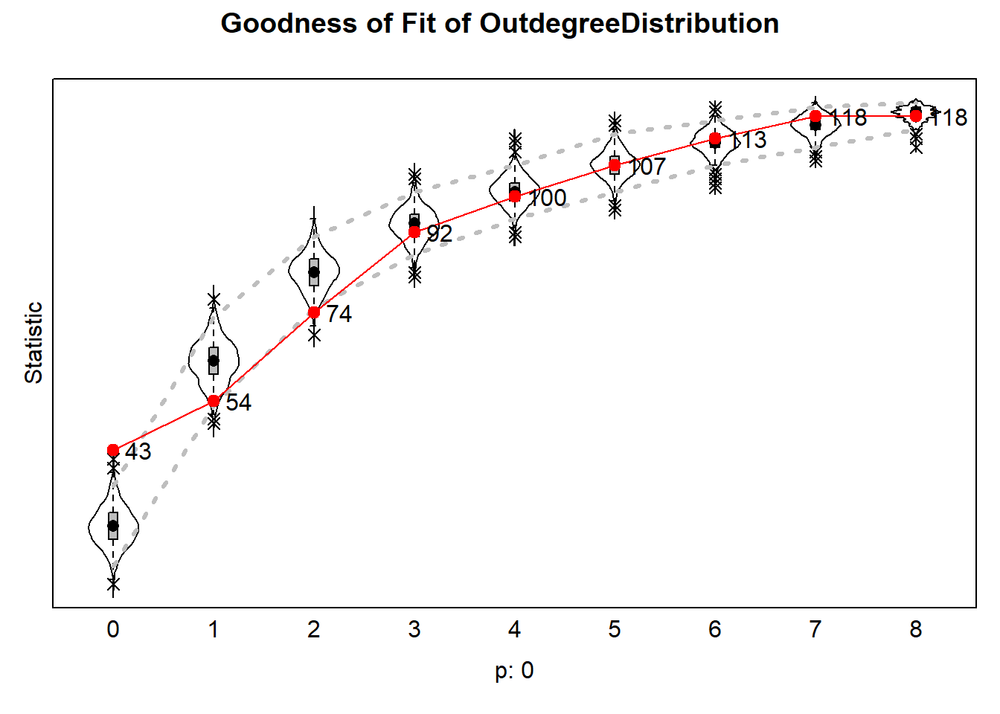
plot(gof1.2.tc, center = T, scale = T)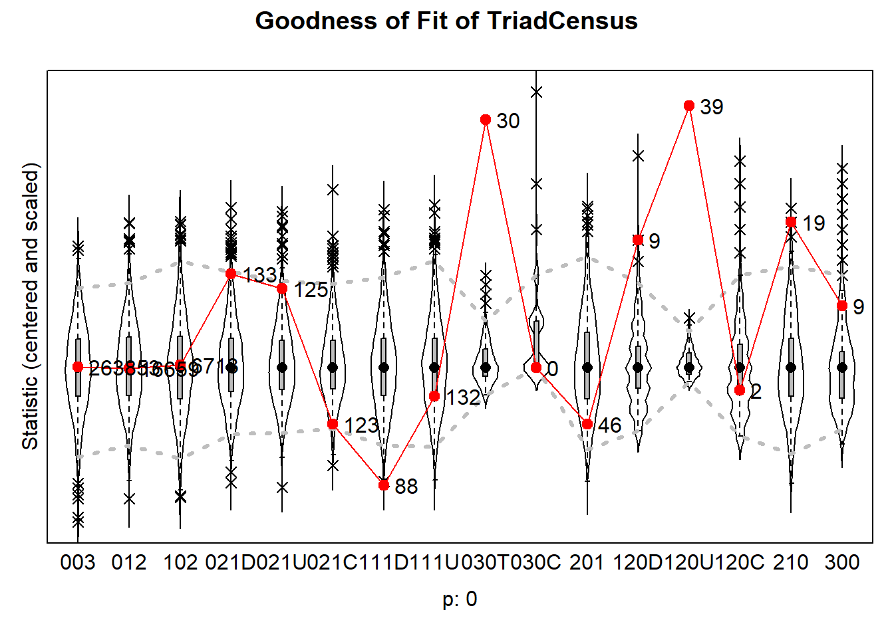
Another one…
myeff1.3 <- includeEffects(myeff, inPop, outAct, outIso) ## effectNumber effectName shortName include fix test initialValue
## 1 81 indegree - popularity inPop TRUE FALSE FALSE 0
## 2 118 outdegree - activity outAct TRUE FALSE FALSE 0
## 3 149 out-isolate outIso TRUE FALSE FALSE 0
## parm
## 1 0
## 2 0
## 3 1model1.3 <- siena07(myAlgorithm, data = mydata, effects = myeff1.3, thetaBound = 10000, returnDeps = T)
#saveRDS(model1.3, "model1.rds")model1.3 <- readRDS("model1.rds")
gofi1.3 <- sienaGOF(model1.3, IndegreeDistribution, verbose = FALSE, join = TRUE, varName = "netMLC")
gofo1.3 <- sienaGOF(model1.3, OutdegreeDistribution, verbose = FALSE, join = TRUE, varName = "netMLC")
gof1.3.tc <- sienaGOF(model1.3, TriadCensus, verbose = FALSE, join = TRUE, varName = "netMLC")plot(gofi1.3)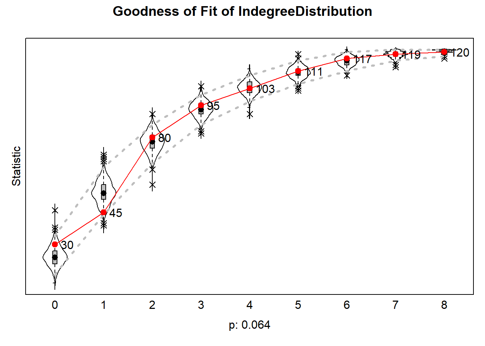
plot(gofo1.3)plot(gof1.3.tc, center = T, scale = T)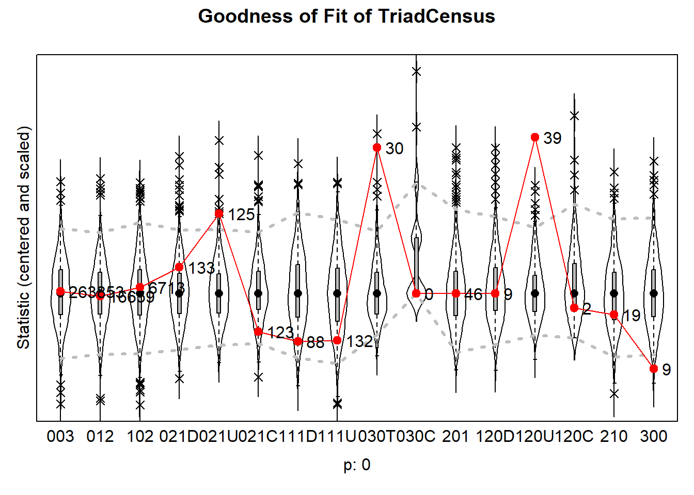
RI <- interpret_size(model1, data = mydata, theta = theta.eval, addPieChart = T, legend = T, getChangeStats = T)## more than one dependent variable
## return value is therefore not of class 'sienaRI'
## but a list of objects of class 'sienaRI'.plot(RI[[1]], addPieChart = TRUE, legendColumns = 3)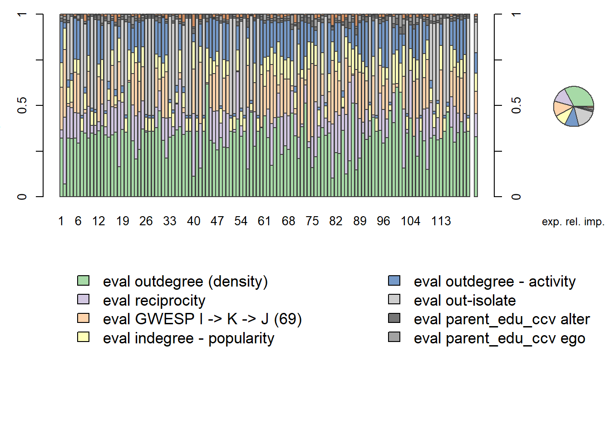
plot(RI[[2]], addPieChart = TRUE, legendColumns = 3)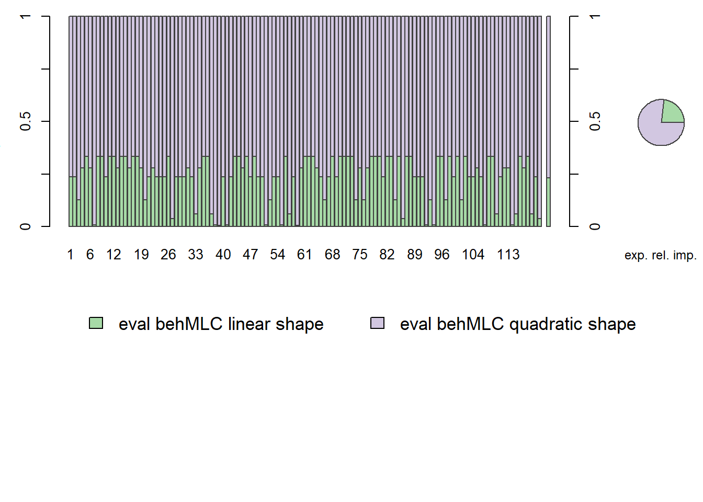
2.3 Model 2: Homogeneity in reciprocated ties with control variables
myeff2 <- includeEffects(myeff1.3, egoX, altX, sameX, sameXRecip, interaction1 = "gender_ccv")## effectNumber effectName shortName include fix test
## 1 449 gender_ccv alter altX TRUE FALSE FALSE
## 2 464 gender_ccv ego egoX TRUE FALSE FALSE
## 3 520 same gender_ccv sameX TRUE FALSE FALSE
## 4 526 same gender_ccv x reciprocity sameXRecip TRUE FALSE FALSE
## initialValue parm
## 1 0 0
## 2 0 0
## 3 0 0
## 4 0 0myeff2 <- includeEffects(myeff1.3, egoX, altX, sameX, sameXRecip, interaction1 = "ethnicity_ccv")## effectNumber effectName shortName include fix test
## 1 633 ethnicity_ccv alter altX TRUE FALSE FALSE
## 2 648 ethnicity_ccv ego egoX TRUE FALSE FALSE
## 3 704 same ethnicity_ccv sameX TRUE FALSE FALSE
## 4 710 same ethnicity_ccv x reciprocity sameXRecip TRUE FALSE FALSE
## initialValue parm
## 1 0 0
## 2 0 0
## 3 0 0
## 4 0 0myeff2## name effectName include fix test initialValue
## 1 netMLC basic rate parameter netMLC TRUE FALSE FALSE 6.21791
## 2 netMLC outdegree (density) TRUE FALSE FALSE -1.72530
## 3 netMLC reciprocity TRUE FALSE FALSE 0.00000
## 4 netMLC GWESP I -> K -> J (#) TRUE FALSE FALSE 0.00000
## 5 netMLC indegree - popularity TRUE FALSE FALSE 0.00000
## 6 netMLC outdegree - activity TRUE FALSE FALSE 0.00000
## 7 netMLC out-isolate TRUE FALSE FALSE 0.00000
## 8 netMLC parent_edu_ccv alter TRUE FALSE FALSE 0.00000
## 9 netMLC parent_edu_ccv ego TRUE FALSE FALSE 0.00000
## 10 netMLC same parent_edu_ccv TRUE FALSE FALSE 0.00000
## 11 netMLC same parent_edu_ccv x reciprocity TRUE FALSE FALSE 0.00000
## 12 netMLC ethnicity_ccv alter TRUE FALSE FALSE 0.00000
## 13 netMLC ethnicity_ccv ego TRUE FALSE FALSE 0.00000
## 14 netMLC same ethnicity_ccv TRUE FALSE FALSE 0.00000
## 15 netMLC same ethnicity_ccv x reciprocity TRUE FALSE FALSE 0.00000
## 16 behMLC rate behMLC period 1 TRUE FALSE FALSE 1.20356
## 17 behMLC behMLC linear shape TRUE FALSE FALSE 0.04242
## 18 behMLC behMLC quadratic shape TRUE FALSE FALSE 0.00000
## parm
## 1 0
## 2 0
## 3 0
## 4 69
## 5 0
## 6 0
## 7 1
## 8 0
## 9 0
## 10 0
## 11 0
## 12 0
## 13 0
## 14 0
## 15 0
## 16 0
## 17 0
## 18 0model2 <- siena07(myAlgorithm, data = mydata, effects = myeff2, thetaBound = 10000, returnDeps = T)
model2
#saveRDS(model2, "model2.rds")